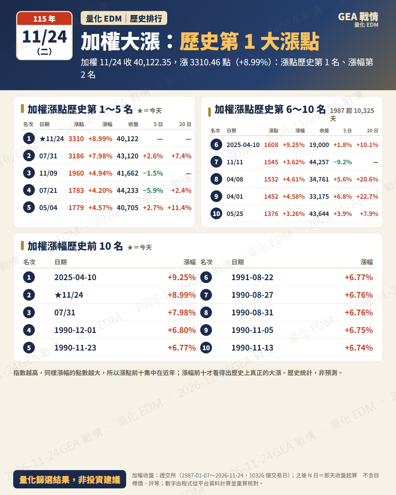
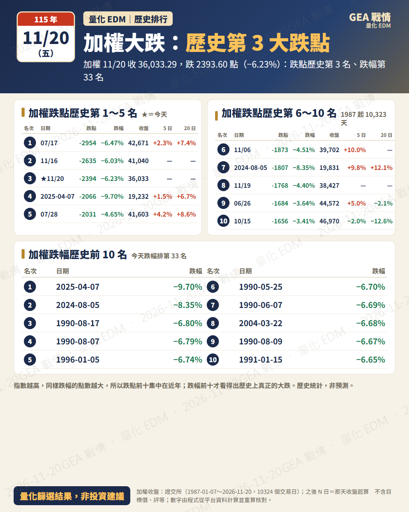

加權大漲歷史前十（示範：條件成立，資料日 2026-11-24 出卡）下載 PNG

核對通過 csv 與 FMTQIK 重疊 80 天收盤一致、82 天漲跌點＝官方；今天收盤再跟 taiex_ohlc、web_data 核對
・正式版同一段 build()
・核對：csv 與 FMTQIK 重疊 80 天收盤一致、82 天漲跌點＝官方；今天收盤再跟 taiex_ohlc、web_data 核對
加權大跌歷史前十（示範：條件不成立，資料日 2026-11-24 不出）下載 PNG
核對通過 不出卡
・正式版同一段 build()，這天不出
・原因：資料日 2026-11-24 跌點第 10325 名、跌幅第 10324 名（都不在前 10）
加權大漲歷史前十（示範：條件不成立，資料日 2026-11-20 不出）下載 PNG
核對通過 不出卡
・正式版同一段 build()，這天不出
・原因：資料日 2026-11-20 漲點第 10321 名、漲幅第 10291 名（都不在前 10）
加權大跌歷史前十（示範：條件成立，資料日 2026-11-20 出卡）下載 PNG

核對通過 csv 與 FMTQIK 重疊 80 天收盤一致、80 天漲跌點＝官方；今天收盤再跟 taiex_ohlc、web_data 核對
・正式版同一段 build()
・核對：csv 與 FMTQIK 重疊 80 天收盤一致、80 天漲跌點＝官方；今天收盤再跟 taiex_ohlc、web_data 核對